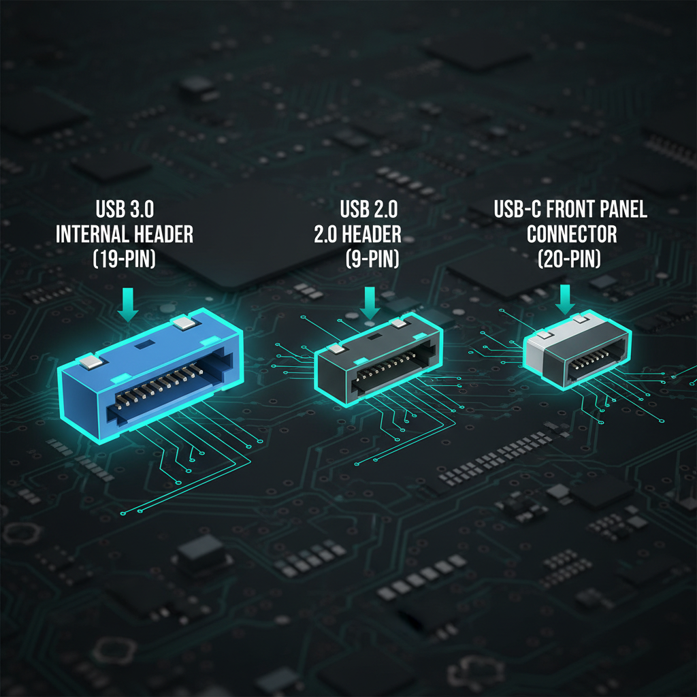

Understanding USB types, internal headers, and front panel connectivity
USB (Universal Serial Bus) has evolved significantly since its introduction. Modern motherboards support multiple USB standards simultaneously, each offering different speeds and connector types. Understanding these standards helps you make the most of your board's connectivity.
| Standard | Speed | Also Known As | Connector Types |
|---|---|---|---|
| USB 2.0 | 480 Mbps | Hi-Speed | Type-A, Type-B, Mini, Micro |
| USB 3.2 Gen 1 | 5 Gbps | USB 3.0 / USB 3.1 Gen 1 | Type-A (blue), Type-C |
| USB 3.2 Gen 2 | 10 Gbps | USB 3.1 Gen 2 | Type-A, Type-C |
| USB 3.2 Gen 2x2 | 20 Gbps | - | Type-C only |
| USB4 | 40 Gbps | - | Type-C only |
| Thunderbolt 4 | 40 Gbps | TB4 | Type-C only |
The USB naming situation is one of the most confusing aspects of modern PC hardware. The USB Implementers Forum (USB-IF) has renamed the same standards multiple times, leading to widespread confusion among builders and consumers alike.
Here is the short version: what was originally called USB 3.0 got renamed to USB 3.1 Gen 1, and then renamed again to USB 3.2 Gen 1. The actual speed never changed - it was always 5 Gbps. The same renaming happened to the 10 Gbps standard: USB 3.1 Gen 2 became USB 3.2 Gen 2. This means you will see all of these names used interchangeably in motherboard spec sheets, case manuals, and retailer listings.
The practical way to identify what you are working with:
Ignore the marketing names. Look for the actual speed rating: 5 Gbps, 10 Gbps, or 20 Gbps. That is the only number that tells you what you are actually getting.
The rear I/O panel on your motherboard is where most of your USB devices will connect. Motherboard manufacturers use color coding and labeling to help you identify port speeds, though the conventions are not always followed strictly.
Here is what you will typically find on the motherboard I/O shield:
Budget boards typically provide 4-6 USB rear ports. Premium boards offer 10-14+ USB rear ports, often with a higher ratio of fast USB 3.2 Gen 2 and Type-C ports.
Internal USB headers are the connectors on your motherboard that connect to your case's front panel USB ports. These are essential for making your case's front I/O functional. Each header type has a distinct physical shape and pin count, so they cannot be connected incorrectly as long as you match them properly.
| Header Type | Provides | Pin Count | Speed |
|---|---|---|---|
| USB 2.0 Header | 2x USB 2.0 ports | 9-pin | 480 Mbps |
| USB 3.2 Gen 1 Header | 2x USB 3.0 ports | 19-pin (blue) | 5 Gbps |
| USB 3.2 Gen 2 Header | 1x USB-C port | 20-pin (key-A) | 10 Gbps |
| USB 3.2 Gen 2x2 Header | 1x USB-C port | 20-pin | 20 Gbps |
USB 3.0 internal headers are notoriously stiff. Be careful when connecting and disconnecting - pull straight out, never wiggle or you will bend pins. Bent pins on the motherboard header can be extremely difficult to repair and may permanently disable those USB ports.
Connecting your case's front USB ports to the motherboard is one of the final steps in a PC build. Getting this right ensures you can use the USB ports on the top or front of your case without reaching around to the rear I/O.
How to connect your case's front USB ports:
Front panel USB-C is becoming increasingly common in modern PC cases, but it requires a dedicated internal header on the motherboard to function. This is an important compatibility point that many builders overlook.
Before finalizing your motherboard and case purchase, take a few minutes to plan your USB connectivity. Running out of USB ports or discovering an incompatibility after building is frustrating and avoidable.
Use this checklist to make sure your build has the USB connectivity you need:
14x USB incl. Thunderbolt 4
14x USB incl. Thunderbolt 4
14x USB incl. Thunderbolt 4
13x USB incl. Thunderbolt 4